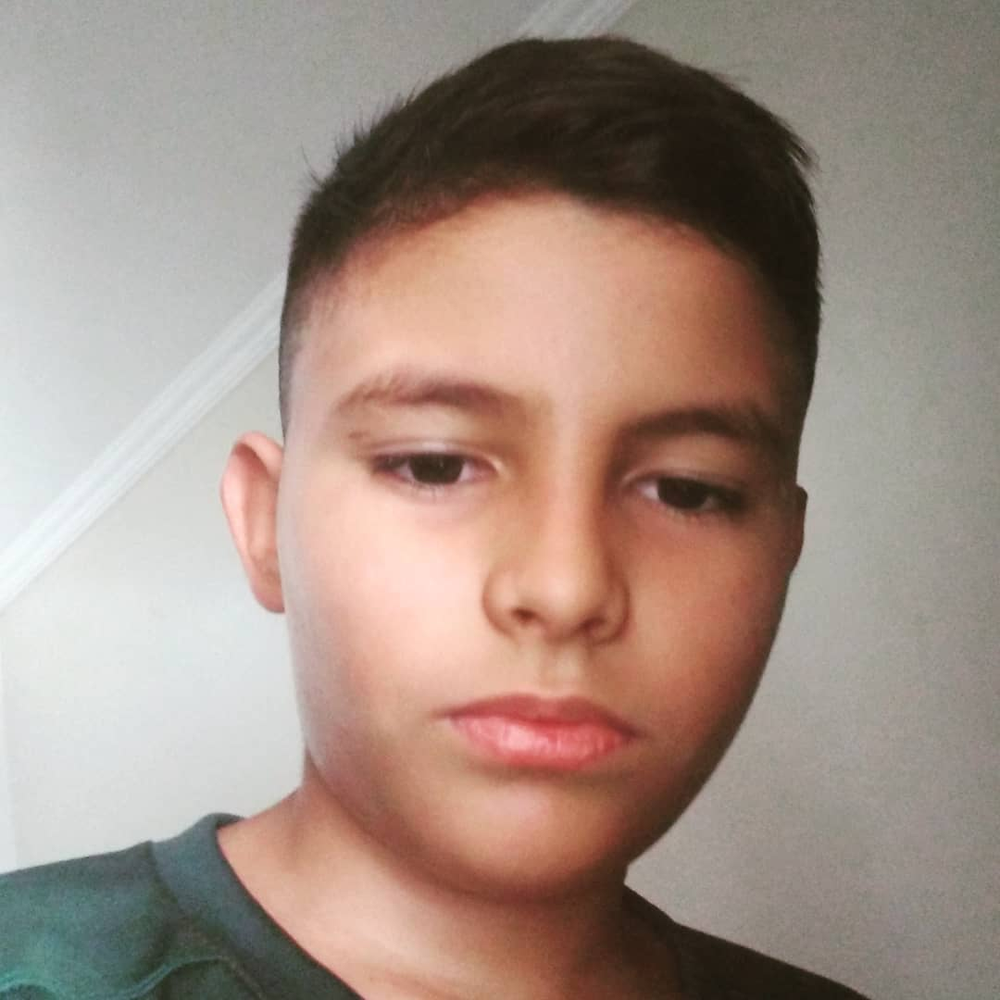

Olá meu nome é Ian Oliveira, sou aluno da Way Qualificações em cascavel-ce... Tenho 12 anos de idade e gosto de jogar futebol, sou atleta da escolinha de futebol tio Douglas Meu pai se chama Odaci e minha mãe Milene Além do futebol gosto muito de praticar outros esportes como: ciclismo, andar de skate, e tênis de mesa.
